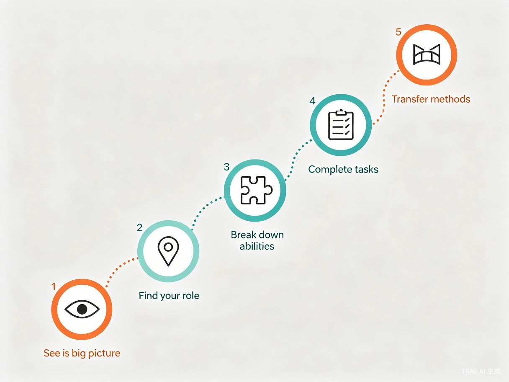

面向职场新人、转行者和新岗位适应者，通过系统化的五步学习法，帮助用户掌握快速理解陌生领域的方法逻辑。
教你用一套方法，快速理解新行业和新岗位。
入行 Compass 是一款面向职场新人、转行者和新岗位适应者的 AI 行业学习方法论工具。它以真实行业、目标岗位和招聘岗位说明为练习对象，通过"看全局、找角色、拆能力、做任务、会迁移"的五步学习法，教用户掌握快速理解陌生领域的系统方法，帮助他们从小白逐步过渡到能上手。
这个定位明确了三件事：
行业知识只是训练材料，不是产品核心。产品不追求覆盖所有行业信息，而是训练用户掌握学习方法。
产品核心是固定学习流程、互动训练和方法复用。用户不是问一个问题就走，而是完成一次完整的学习训练。
帮用户学会如何学习陌生行业和岗位。用户带走的不只是行业知识，更是一套可迁移的学习方法。
核心理念：不只给你行业答案，更教你掌握入门新领域的学习逻辑。
产品口号：教你用一套方法，快速理解新行业和新岗位。
很多职场新人、应届生和转行者面对陌生行业时，真正缺的不是资料，而是学习方法。他们常见的问题不是"不努力"，而是不知道该从哪里开始。
| 用户痛点 | 具体表现 | 入行 Compass 的解决方式 |
|---|---|---|
| 看不懂岗位 | 招聘信息写得很专业，但不知道实际工作是什么 | 招聘岗位说明拆解，翻译成人话 |
| 不懂行业 | 不知道行业怎么运转、靠什么赚钱、有哪些角色 | 五步法引导用户从全局开始理解 |
| 学习混乱 | 网上资料很多，但不知道先学什么、后学什么 | 能力三分法拆解知识、技能、判断 |
| 缺少练习 | 学了概念，却不知道真实工作中怎么用 | 模拟任务和互动训练验证理解 |
| 没有反馈 | 不知道自己是否真的理解了这个岗位 | AI 追问、任务反馈和能力成长记录 |
| 入职焦虑 | 会议里听不懂术语，工作内容不清楚 | 术语翻译和老板任务拆解训练 |
| 换行再迷茫 | 换一个行业后又要从零开始 | 方法复用卡，学会的方法可迁移 |
第一次找工作，看不懂岗位要求。需要快速理解行业和岗位，知道要准备什么。
面对大量招聘信息，不知道怎么判断。需要学会拆解岗位和能力要求。
想进入新行业，但没有经验。需要建立学习路径，判断能力差距。
换岗或刚入职，听不懂业务术语。需要快速理解工作内容和业务逻辑。
产品的核心方法是五步学习法。用户学完一个行业后，不只是知道"这个行业是什么"，而是学会了一套可以反复迁移的学习方法。

理解行业解决什么问题、谁参与、怎么运转。用户学会先看行业结构，而不是直接背术语。AI 引导用户回答：这个行业解决谁的什么问题？谁为这个问题付钱？钱、货、信息是怎么流动的？
理解目标岗位在业务流程中的位置。用户学会判断岗位不是孤立存在的，而是在业务流程中承担某段责任。AI 引导：这个岗位服务哪个业务目标？上游是谁？下游是谁？交付什么结果？
把岗位能力拆成三类：知识（要听懂什么概念）、技能（要会做什么动作）、判断（要能做出什么选择）。很多新人只会说"我要学运营"，但不知道具体要学什么。
用真实任务验证理解。任务分三类：认知任务（检查是否说得清）、分析任务（检查是否拆得开）、产出任务（检查是否做得出）。理解不是看完资料，而是能完成一个接近真实工作的任务。
把这次学到的方法带走。系统生成方法复用卡，记录本次使用的方法、最有用的问题、下次如何复用、可迁移到哪些场景。这是"授人以渔"的关键体现。
判断标准：这个功能是在直接给鱼，还是在教用户怎么捕鱼？如果只是给行业介绍，就不是核心功能；如果能帮助用户掌握拆解方法，就应该保留。
首页不是普通问答框，而是强调"用方法学习"的入口。用户只要说出目标行业或岗位，系统自动进入五步学习流程。
用户输入目标后，系统不直接输出长篇行业介绍，而是进入五步学习流程。AI 在关键节点追问用户，而不是单向灌输知识。
| 步骤 | AI 引导方式 | 用户参与 | 训练目标 |
|---|---|---|---|
| 看全局 | 先给行业结构示例，再让用户补充 | 回答行业运转问题 | 学会先看结构再背术语 |
| 找角色 | 给出业务流程图，让用户定位岗位 | 判断岗位在流程中的位置 | 理解岗位不是孤立存在 |
| 拆能力 | 给出能力卡片，让用户分类 | 区分知识、技能、判断 | 学会拆解岗位能力 |
| 做任务 | 生成模拟任务，等待用户提交 | 完成接近真实工作的任务 | 用任务验证是否理解 |
| 会迁移 | 生成方法复用卡 | 确认哪些方法可以复用 | 形成可迁移的学习能力 |
每次学习结束后，系统生成一张方法复用卡。这是产品的标志性产物，也是"授人以渔"的关键体现。
例如：跨境电商运营
先看交易链路，再找岗位位置，再拆能力
谁付钱？岗位交付什么？用什么指标判断？
遇到任何运营岗位，都先问业务目标、用户动作和关键指标
新媒体运营、用户运营、活动运营、增长运营
给用户一套可以复制使用的问题模板，用户以后即使不用产品，也能带走方法。
| 学习目标 | 可以问的问题 |
|---|---|
| 看懂行业 | 这个行业解决谁的什么问题？谁为此付钱？ |
| 看懂岗位 | 这个岗位在业务流程中负责哪一段？ |
| 拆解能力 | 这个岗位需要哪些知识、技能和判断？ |
| 看懂招聘说明 | 哪些要求是日常工作，哪些只是加分项？ |
| 验证理解 | 我能不能用一个真实任务解释这个岗位？ |
互动小游戏不是额外功能，而是五步学习法中的训练关卡。每一个互动都必须对应一种学习能力，服务"授人以渔"的核心目标。
系统把行业拆成多张卡片（用户、产品、平台、物流、支付等），用户需要把卡片拖到正确位置，拼出行业运转链路。
系统给出业务流程图和一个岗位名称，用户需要判断这个岗位主要负责流程中的哪一段。
系统给出一组能力卡片，用户需要把它们正确分类到"知识""技能""判断"三类中。
用户粘贴招聘信息，系统拆成多张卡片，用户需要标记核心要求、加分项、模糊表达和需要追问的地方。
系统模拟领导布置模糊任务（如"用户留存不太好，你看看怎么优化"），用户需要拆成目标、数据、原因、确认对象和方案。
用户刚学完一个岗位的拆解方法，系统给一个新岗位，让用户判断哪些问题可以复用。
徽章围绕真实能力命名，不低龄化，符合职场产品调性。
完成 3 次行业结构拆解
正确判断 5 个岗位位置
完成 5 次能力三分法
完成 3 个老板任务拆解
迁移方法到 2 个新岗位
完成一次完整五步流程
用户留存不能靠不断推送行业知识，而要靠"用户每遇到一个新行业、新岗位、新任务，都回来用这套方法拆解"。
| 场景 | 用户为什么回来 |
|---|---|
| 换行业 | 用同一套方法快速理解新领域 |
| 看新岗位 | 用岗位拆解法判断是否适合自己 |
| 面试前 | 用方法梳理岗位和业务理解 |
| 入职后 | 用任务拆解法理解真实工作 |
| 遇到新任务 | 用拆解逻辑理清怎么做 |
| 想提升 | 用能力树判断下一步该练什么 |
系统持续记录用户的学习过程，让用户看到自己的成长。
记录用户探索过的领域范围
记录用户的岗位理解能力
沉淀用户的练习成果
强化方法迁移意识
用户为什么不直接问豆包、元宝、Kimi 或其他大模型？因为通用 AI 的前提是用户知道该问什么，但新人最大的问题恰恰是不知道该从哪里问起。
核心差异：查资料可以问通用 AI，学会进入一个新行业要用入行 Compass。普通 AI 给答案，入行 Compass 教你怎么学。
首页不能只是一个普通问答框，必须有明确的学习流程和引导步骤。
每次输出都要包含方法、问题、练习和迁移提示，不能只给一段介绍。
用户要回答、判断、拖拽、分类、练习和复盘，不能只是被动阅读。
第一版不做大而全，只做能完整体现方法论的闭环。产品形态为微信小程序，扫码即用，适合快速展示和传播。
| 页面 | 核心作用 |
|---|---|
| 首页 | 输入行业、岗位或招聘岗位说明，提供快捷入口 |
| 五步学习页 | 按"看全局、找角色、拆能力、做任务、会迁移"推进 |
| 方法训练场 | 完成轻量互动任务（能力三分法、招聘岗位说明找重点等） |
| 任务反馈页 | AI 评价用户理解是否准确，给出改进方向 |
| 方法复用卡 | 总结这次学到的方法，下次可迁移使用 |
| 我的成长 | 保存学习记录、任务记录和能力状态 |
产品核心，必须完整实现。
贴近求职场景，用户需求强。
最能体现学习方法论。
体现"授人以渔"的核心。
适合入职后留存，提升使用频次。
增强用户依赖感和成就感。
增强趣味性和视觉吸引力。
强化长期价值和复用意识。
比赛展示时用一个具体用户故事来体现产品价值。
小林是一名应届毕业生，想投递"AI 产品经理实习生"，但她看不懂招聘岗位说明，也不知道该从哪里学。
AI 引导她先理解：AI 产品不是单纯研究大模型，而是把 AI 能力放进真实用户场景里，解决用户问题。
AI 继续引导：AI 产品经理在团队里的角色，是把用户需求、AI 能力、产品体验和技术实现连接起来。
系统把岗位能力拆成三类：知识（大模型基础、用户场景、产品流程）、技能（需求分析、原型表达、文档撰写）、判断（判断一个功能是否真的需要 AI）。
系统给她一个模拟任务：设计一个"AI 简历优化助手"的基础功能方案。她提交后，AI 反馈："你的方案已经说明了功能，但目标用户还不够具体。建议把'求职者'进一步拆成'应届生''转行者''有 3 年经验想跳槽的人'。"
系统生成方法复用卡："以后理解任何 AI 产品岗位，都可以先问四个问题：用户场景是什么？AI 在哪里产生价值？用户如何感知效果？用什么指标判断功能是否有效？"
案例总结：小林不是只知道了 AI 产品经理是什么，而是学会了一套理解新岗位的方法。下次遇到任何新岗位，她都知道该如何拆解。
产品成熟后，可以扩展到多个方向，但第一阶段不要过早发散。
适合长文本招聘岗位说明、学习报告和作品整理，覆盖手机和电脑场景。
企业上传内部资料，新员工用五步法快速理解业务，减少老员工重复带人的时间。
帮学生理解专业对应岗位和行业路径，提升就业准备效率。
用方法拆解岗位要求，训练回答逻辑和表达结构。
把任务练习转化为求职展示材料，连接用户的现实利益。
长期记录用户方法掌握和能力成长，形成职业发展数据。
教你用一套方法，快速理解新行业和新岗位。
不只给你行业答案，更教你掌握入门新领域的学习逻辑。